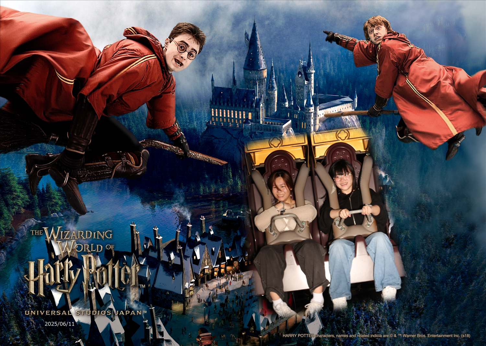
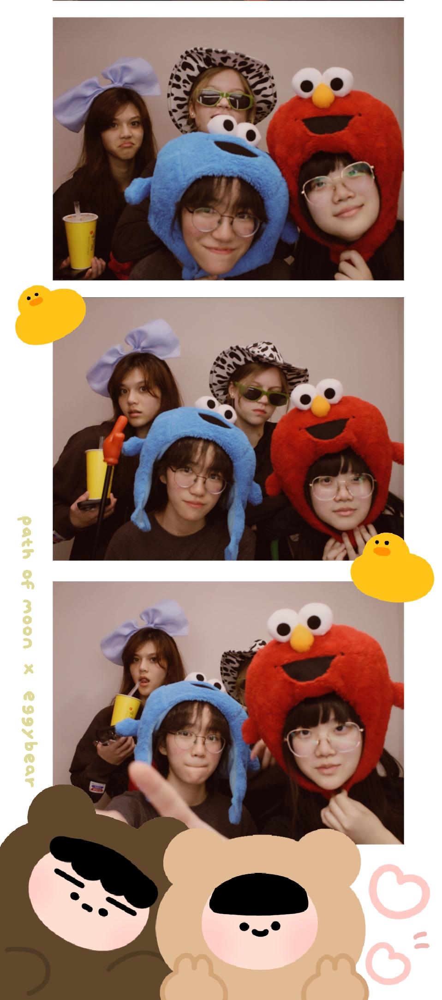
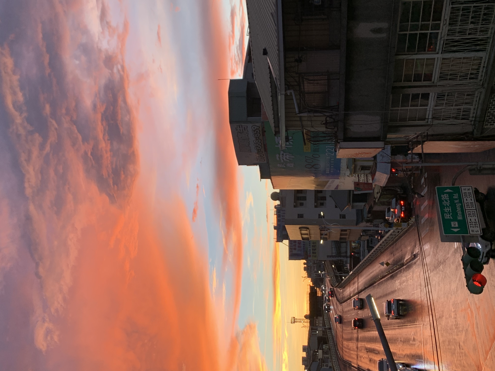
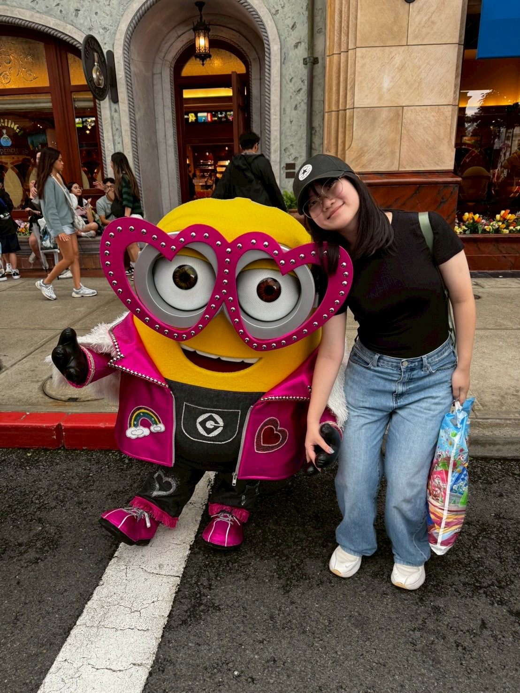

Who am I?
I'm a sophomore at UCSD, studying Cognitive Science (Design + Interaction). Before that, I was an artist,
a developer, and an entrepreneur. Whilst these roles have taught me many things, there is one central theme
that stays: the ability to think for others. That’s why I’m drawn to design – I am eager to turn human
understanding into meaningful experiences that resonate with people.
To me, design is about seeing the world through someone else’s eyes– understanding their emotions, challenges, and needs,
then creating something for them. It’s not just about solving problems, but also building connections and making everyday
moments a little bit more thoughtful. It can be as simple as a student briefly pausing to notice a poster on their way to
class, noticing something that makes them smile or think a little deeper.
More about me :)
When I'm not designing, you can catch me drawing stickers for my business
@dousquaredco ↗, browsing through record stores, or
scrapbooking memories from my travels.
Fun Fact: I LOVE the Minions (see bottom right image.) I won a banner design competition for
the game Minion Rush and won a costume for
Fluffycorn Carl ↗ (my greatest achievement)



